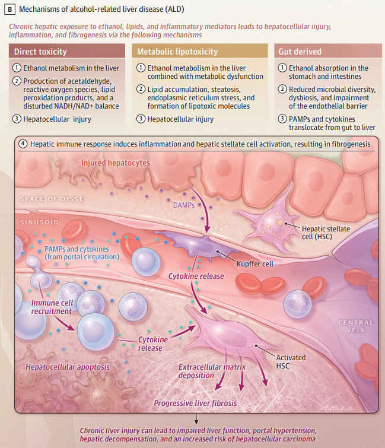
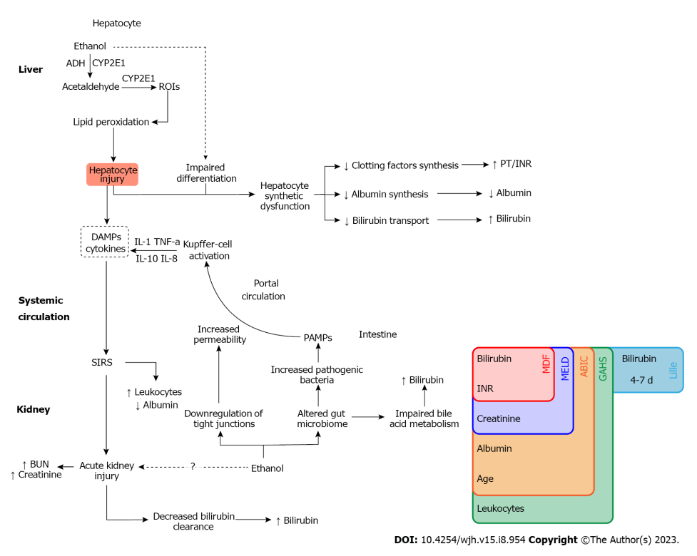
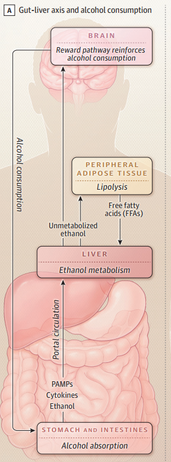
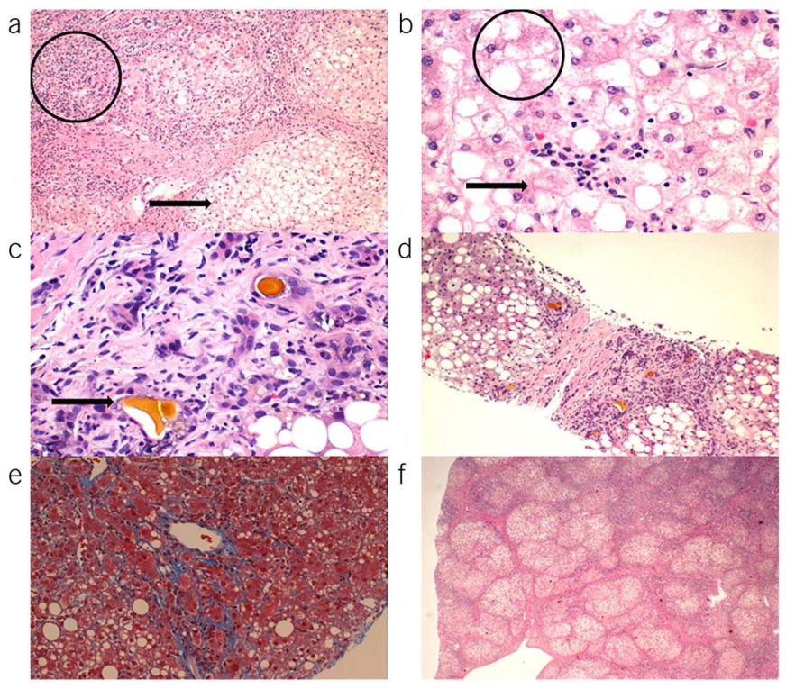

SINH LÝ BỆNH & CƠ CHẾ BỆNH SINH VIÊM GAN DO RƯỢU (AH)
Alcohol-Associated Hepatitis (AH / AAH) Pathophysiology & Pathogenesis — Phân tích chi tiết 3 con đường bệnh sinh cốt lõi: Độc tính trực tiếp của chuyển hóa Ethanol (ADH, CYP2E1, Acetaldehyde, NADH/NAD+, ROS), Độc tính lipid chuyển hóa (Lipotoxicity, ER stress), và Tổn thương trục ruột – gan (Loạn khuẩn, Ruột rò rỉ, PAMPs/TLR4); Thác miễn dịch tuyển mộ bạch cầu trung tính qua IL-8/ICAM-1; Rối loạn vi tuần hoàn & xơ hóa quanh tế bào dạng "lưới thép" (chicken-wire fibrosis); Sinh lý bệnh suy thận cấp AKI & hội chứng gan thận HRS; Tê liệt miễn dịch và nguy cơ nhiễm nấm Aspergillus xâm lấn.
Viêm gan do rượu (Alcohol-Associated Hepatitis - AH / AAH) là thể lâm sàng cấp tính kịch phát và đe dọa tính mạng nghiêm trọng nhất trong quang phổ của bệnh gan do rượu (ALD). Bệnh cảnh đặc trưng bởi tình trạng vàng da tiến triển nhanh kèm suy giảm chức năng gan cấp tính trên nền bệnh nhân lạm dụng rượu mạn tính nặng. Mặc dù 90–95% người nghiện rượu có nhiễm mỡ gan, chỉ 10–35% thực sự bùng phát thành viêm gan do rượu, phản ánh một cơ chế sinh bệnh học đa tầng phức tạp do sự giao thoa giữa độc tính phân tử của cồn, phản ứng bão cytokine miễn dịch và biến chứng suy đa cơ quan hệ thống.
Phần I: Khái Quát Quang Phổ Bệnh Gan Do Rượu & Ba Con Đường Bệnh Sinh Cốt Lõi
Quang phổ của bệnh gan do rượu (Alcohol-Related Liver Disease - ALD) trải dài qua nhiều giai đoạn tiến triển liên tục:
1. Độc Tính Tế Bào Trực Tiếp
Quá trình oxy hóa ethanol qua ADH và CYP2E1 tạo ra lượng lớn Acetaldehyde độc hại, các gốc oxy hóa tự do (ROS), gây mất cân bằng tỷ lệ NADH/NAD+ và phá hủy màng tế bào gan, giải phóng các phân tử báo động tổn thương (DAMPs).
2. Độc Tính Lipid Chuyển Hóa
Ức chế oxy hóa beta ty thể kết hợp tăng phân giải mỡ từ mô mỡ ngoại vi và tăng DNL tạo ra bể lipid độc (Ceramides, DAG) gây Stress mạng lưới nội chất (ER Stress) và apoptosis tế bào gan.
3. Tổn Thương Trục Ruột – Gan
Loạn khuẩn ruột kết hợp hiện tượng "ruột rò rỉ" (leaky gut) làm các phân tử vi sinh PAMPs (đặc biệt là Lipopolysaccharide - LPS/endotoxin) tràn vào tĩnh mạch cửa, kích hoạt thụ thể TLR4 trên tế bào Kupffer phóng bão cytokine.
Phần II: Con Đường 1 – Độc Tính Tế Bào Trực Tiếp Từ Quá Trình Chuyển Hóa Ethanol
Rượu (ethanol) được hấp thu nhanh chóng tại dạ dày – ruột non và theo tĩnh mạch cửa về gan. Tại tế bào gan, ethanol được oxy hóa qua hai hệ thống enzyme chủ đạo:
1. Hệ Thống Alcohol Dehydrogenase (ADH)
Enzyme chính tại bào tương tế bào gan, xúc tác chuyển hóa:
Ethanol + NAD+ &xrightarrow{\text{ADH}} Acetaldehyde + NADH + H+
Phản ứng này làm tiêu thụ lượng lớn NAD+ và sinh ra NADH dư thừa, làm đảo lộn tỷ lệ NADH/NAD+ trong tế bào gan.
2. Hệ Thống Cytochrome P450 2E1 (CYP2E1 / MEOS)
Nằm tại lưới nội chất hạt (microsome), hệ thống này bị cảm ứng tăng hoạt tính gấp nhiều lần khi uống rượu nặng mạn tính:
Ethanol + NADPH + H+ + O2 &xrightarrow{\text{CYP2E1}} Acetaldehyde + NADP+ + 2 H2O
Quá trình này tiêu tốn oxy và sản sinh ra lượng khổng lồ các gốc oxy hóa hoạt động (ROS: O2•−, H2O2, •OH).
4 Cơ Chế Hủy Hoại Tế Bào Gan Trực Tiếp
1. Tích Tụ Acetaldehyde & Tạo Thành Protein/DNA Adducts
Acetaldehyde là chất cực độc. Nó tạo các liên kết cộng hóa trị với các protein nội bào và DNA tạo thành các Acetaldehyde Adducts. Các liên hợp này làm gãy đổ khung nâng đỡ tế bào (sợi keratin 8 và 18 bị ngưng tụ thành thể Mallory-Denk), ức chế enzyme sửa chữa DNA, và biến đổi cấu trúc kháng nguyên màng tế bào khiến hệ miễn dịch nhận diện nhầm và tấn công tế bào gan (phản ứng tự miễn thứ phát).
2. Mất Cân Bằng Tỷ Lệ NADH/NAD+ & Tê Liệt Hô Hấp Tế Bào
Lượng NADH dư thừa cao bất thường làm ức chế chu trình acid citric (Krebs cycle) và ức chế enzyme β-hydroxyacyl-CoA dehydrogenase của quá trình oxy hóa beta acid béo trong ty thể. Acid béo không được đốt cháy sẽ chuyển hướng sang este hóa thành triglyceride, gây nhiễm mỡ gan ồ ạt. Đồng thời, tỷ lệ NADH/NAD+ cao làm tăng chuyển pyruvate thành lactate, dẫn đến nhiễm toan lactic và giảm thải trừ acid uric qua thận (tăng acid uric máu).
3. Bão ROS & Hiện Tượng Peroxide Hóa Màng Tế Bào (Lipid Peroxidation)
ROS sinh ra từ CYP2E1 tấn công trực tiếp vào các acid béo không bão hòa của màng ty thể và màng tế bào gan, sinh ra các sản phẩm độc hại như 4-HNE (4-Hydroxynonenal) và MDA (Malondialdehyde). Hậu quả làm mất điện thế màng ty thể, cạn kiệt ATP nội bào, rò rỉ Cytochrome C và kích hoạt con đường Apoptosis/Hoại tử tế bào gan.
4. Phóng Thích Các Phân Tử Báo Động Tổn Thương (DAMPs)
Khi tế bào gan bị vỡ và hoại tử, chúng giải phóng các DAMPs (HMGB1, DNA ty thể, ATP, acid uric) vào khoảng Disse. DAMPs gắn vào các thụ thể PRRs trên tế bào Kupffer và tế bào nội mô xoang gan (LSECs), khơi mào cho phản ứng viêm nội mô xoang và kích hoạt tế bào hình sao gan (HSC) tăng sinh xơ.

Ethanol chuyển hóa qua ADH và CYP2E1 sinh ra Acetaldehyde, các gốc oxy hóa tự do (ROS), sản phẩm peroxide hóa lipid và làm đảo lộn tỷ lệ NADH/NAD+. Tổn thương tế bào gan giải phóng các phân tử DAMPs, kích hoạt tế bào miễn dịch xoang gan và kích thích tế bào hình sao (HSC) tổng hợp collagen gây xơ hóa.

Tổn thương tế bào gan làm suy giảm khả năng bài tiết bilirubin (gây tăng Bilirubin máu & vàng da sẫm), suy giảm tổng hợp protein đông máu (làm kéo dài thời gian Prothrombin / tăng INR) — hai thông số cốt lõi cấu thành các thang điểm tiên lượng độ nặng kinh điển (Maddrey's DF ≥ 32, MELD ≥ 21, ABIC, Glasgow, Lille model).
Phần III: Con Đường 2 – Rối Loạn Chuyển Hóa Mỡ & Độc Tính Lipid (Metabolic Lipotoxicity)
Sự tích tụ mỡ trong viêm gan do rượu không đơn thuần là nhiễm mỡ lành tính mà nhanh chóng tiến triển thành độc tính lipid (Lipotoxicity):
1. Huy Động FFA Ngoại Vi & Tăng DNL
Ethanol ức chế phân giải acid béo tại gan nhưng lại kích thích phân giải lipid (lipolysis) tại mô mỡ dưới da và nội tạng, giải phóng dòng thác acid béo tự do (FFAs) đổ về gan. Đồng thời, ethanol kích hoạt yếu tố phiên mã SREBP-1c, thúc đẩy sinh tổng hợp acid béo mới (De Novo Lipogenesis - DNL).
2. Stress Lưới Nội Chất (ER Stress) & Trục STING-IRF3
Nồng độ cao các acid béo bão hòa và ceramides làm biến dạng màng lưới nội chất, tích tụ protein gập sai. Tình trạng ER stress kéo dài kích hoạt con đường tín hiệu STING-IRF3, trực tiếp kích thích caspase-3 và caspase-9 đưa tế bào gan vào con đường tự hủy (Apoptosis).
3. Cộng Hưởng Từ Đa Hình Gen (PNPLA3, TM6SF2, MBOAT7)
Đa hình gen PNPLA3 I148M (rs738409) làm enzym Adiponutrin mất hoạt tính phân giải giọt mỡ, khiến lipid bị "bẫy" vĩnh viễn trong tế bào gan. Người mang alen đột biến này khi uống rượu có nguy cơ xơ gan và viêm gan do rượu tăng gấp 2–3 lần so với người không mang gen.
Phần IV: Con Đường 3 – Tổn Thương Trục Ruột – Gan & Sự Di Chuyển Của PAMPs
Trục ruột – gan là động cơ khuếch đại biến một tổn thương gan mạn tính thành cơn bão viêm cấp tính bùng phát dữ dội đặc trưng của viêm gan do rượu (AH):
1. Loạn Khuẩn Ruột Nặng Nề (Severe Gut Dysbiosis)
Rượu tiêu thụ mạn tính trực tiếp tiêu diệt các lợi khuẩn sản xuất acid béo chuỗi ngắn (như Bifidobacteria và Lactobacillus), tạo điều kiện cho các chủng vi khuẩn Gram âm kỵ khí và Escherichia coli sinh sôi vượt bậc trong lòng ruột non và đại tràng.
2. Hiện Tượng "Ruột Rò Rỉ" (Leaky Gut Syndrome)
Ethanol và acetaldehyde phá hủy lớp màng nhầy niêm mạc ruột, đồng thời làm phosphoryl hóa và bất hoạt các protein liên kết vòng bịt (Tight Junctions: Claudin-1, Occludin, ZO-1) giữa các tế bào biểu mô ruột. Hàng rào ruột bị phá vỡ hoàn toàn tính toàn vẹn.
3. Sự Dịch Chuyển Của PAMPs Vào Tĩnh Mạch Cửa (Bacterial Translocation)
Các phân tử kháng nguyên vi sinh vật (Pathogen-Associated Molecular Patterns - PAMPs) — đặc biệt là Lipopolysaccharide (LPS / Endotoxin) từ vách vi khuẩn Gram âm, peptidoglycan, flagellin và DNA vi khuẩn — ồ ạt thẩm thấu qua thành ruột vào dòng máu tĩnh mạch cửa đổ thẳng về gan.
4. Kích Hoạt Thụ Thể TLR4 Trên Tế Bào Kupffer & Bão Cytokine
Tại gan, LPS kết hợp với protein gắn LPS (LBP) và phức hợp đồng thụ thể CD14 liên kết chặt vào Toll-Like Receptor 4 (TLR4) trên màng tế bào Kupffer. Sự kích hoạt TLR4 khởi động con đường MyD88 – NF-κB, giải phóng ồ ạt các cytokine tiền viêm cực mạnh: TNF-α, IL-1β, IL-6 và IL-8.

Ethanol gây loạn khuẩn và phá hủy liên kết chặt niêm mạc ruột (Leaky Gut). Các thành phần vi khuẩn (PAMPs / LPS) dịch chuyển qua tĩnh mạch cửa đến gan, kích hoạt tế bào Kupffer qua thụ thể TLR4 phóng thích bão cytokine (TNF-α, IL-1β, IL-8), lôi kéo bạch cầu trung tính và hoạt hóa tế bào hình sao gan (HSC).
Phần V: Thác Miễn Dịch Tế Bào, Tuyển Mộ Bạch Cầu Trung Tính & Bất Thường Tái Tạo
Khác biệt với viêm gan siêu vi (vốn ưu thế thâm nhiễm tế bào lympho T CD8+), thâm nhiễm bạch cầu đa nhân trung tính (Neutrophils Infiltration) dày đặc là dấu ấn mô bệnh học đặc trưng số 1 của viêm gan do rượu:
1. Trục Hóa Hướng Động IL-8 & Bám Dính ICAM-1
Tế bào Kupffer và tế bào gan tổn thương tiết ra lượng lớn Interleukin-8 (IL-8) — cytokine hóa hướng động bạch cầu trung tính mạnh nhất. Đồng thời, các cytokine tiền viêm kích thích tế bào nội mô xoang gan (LSECs) tăng biểu hiện thụ thể bám dính ICAM-1 (Intercellular Adhesion Molecule 1) và E-selectin, giúp bạch cầu trung tính bám dính chắc vào thành mạch xoang và xuyên mạch vào nhu mô gan.
2. Bẫy Ngoại Bào NETs & Độc Tính Protease
Khi xâm nhập vào tiểu thùy gan, bạch cầu trung tính giải phóng các hạt enzyme tiêu đạm (Myeloperoxidase, Neutrophil Elastase) và phóng thích bẫy ngoại bào bạch cầu trung tính (Neutrophil Extracellular Traps - NETs) bao quanh các tế bào gan thoái hóa bong bóng. Mặc dù NETs nhằm bắt giữ vi khuẩn, chúng lại gây hoại tử tế bào gan hàng loạt và bít tắc các vi xoang gan.
3. Thất Bại Tái Tạo Nhu Mô Gan (Impaired Regeneration)
Mặc dù có sự tăng sinh mạnh mẽ của các tế bào tiền thân gan (Hepatic Progenitor Cells / CD34+ stem cells) nhằm bù đắp lượng tế bào gan đã chết, nhưng vi môi trường viêm dày đặc cytokine TNF-α/TGF-β đã ức chế hoàn toàn quá trình biệt hóa của chúng thành tế bào gan trưởng thành chức năng. Nhu mô gan không thể phục hồi, dẫn đến tình trạng suy gan cấp tiến triển không hồi phục.
Phần VI: Biến Đổi Vi Tuần Hoàn Gan & Xơ Hóa Dạng "Lưới Thép" (Chicken-Wire Fibrosis)
1. Xơ Hóa Quanh Tế Bào Dạng "Lưới Thép" (Pericellular / Chicken-Wire Fibrosis)
Tế bào hình sao gan (HSCs) bị kích hoạt bởi TGF-β và các sản phẩm peroxide hóa lipid sẽ tăng sinh và chuyển thành nguyên bào sợi cơ. Điểm đặc thù của bệnh gan do rượu là collagen type I và III không chỉ lắng đọng ở khoảng cửa mà lắng đọng dày đặc dọc theo khoảng Disse quanh từng tế bào gan đơn lẻ và quanh tĩnh mạch trung tâm tiểu thùy (Zone 3), tạo nên mạng lưới sợi xơ bao bọc như một "lưới chuồng gà" (chicken-wire pattern), bóp nghẹt sự trao đổi chất giữa tế bào gan và dòng máu xoang gan.
2. Hoại Tử Hyaline Xơ Hóa (Sclerosing Hyaline Necrosis) & Tăng Áp Cửa Cấp Tính
Xơ hóa và viêm tắc quanh tĩnh mạch trung tâm tiểu thùy dẫn đến hiện tượng hoại tử hyaline xơ hóa, bít tắc đường thoát máu của tiểu thùy gan. Khi bệnh nhân tiếp xúc với cồn cấp tính, ethanol làm giảm hoạt tính của enzyme eNOS (làm sụt giảm Nitric Oxide nội mô xoang gan), gây co thắt các tế bào hình sao quanh xoang. Kết hợp với sự giãn mạch tạng do cytokine viêm, áp lực tĩnh mạch cửa (đo qua chênh lệch áp lực tĩnh mạch gan - HVPG) tăng vọt tức thì sau khi uống rượu, kích hoạt biến cố vỡ giãn tĩnh mạch thực quản xuất huyết ồ ạt.
Phần VII: Sinh Lý Bệnh Của Biến Chứng Suy Thận Cấp (AKI), Hội Chứng Gan Thận & Tê Liệt Miễn Dịch
Suy thận cấp (AKI) xuất hiện ở gần 40% bệnh nhân viêm gan do rượu nặng (19% có sẵn lúc nhập viện + 21% phát triển mới trong nằm viện) và là yếu tố dự báo tử vong độc lập mạnh nhất (tỷ lệ tử vong 90 ngày lên tới 47% ở nhóm có incident AKI):
1. Giãn Mạch Tạng & Hội Chứng Gan Thận (HRS)
Tăng áp cửa và bão cytokine (TNF-α, NO tạng) làm giãn cực độ giường mao mạch mạc treo → giảm thể tích tuần hoàn hữu hiệu trong hệ động mạch → kích hoạt tối đa hệ RAAS, hệ thần kinh giao cảm và tiết Vasopressin → co thắt tiểu động mạch đến thận dữ dội gây thiểu niệu và suy giảm tốc độ lọc cầu thận (Hepatorenal Syndrome - HRS-AKI).
2. Hội Chứng SIRS & Hoại Tử Ống Thận Cấp (ATN)
Sự tràn ngập của PAMPs (LPS) và DAMPs kích hoạt hội chứng đáp ứng viêm hệ thống (SIRS). Độc tố nội bào, các gốc tự do ROS và bilirubin nồng độ cao lắng đọng trong lòng ống thận (Bile Cast Nephropathy) gây độc trực tiếp và hoại tử biểu mô ống thận.
3. Tác Hại Của Thuốc Chẹn Beta Không Chọn Lọc (NSBBs)
Sử dụng NSBBs (Propranolol/Carvedilol) ở bệnh nhân AH nặng làm giảm cung lượng tim và triệt tiêu phản xạ bù trừ huyết động của thận, làm tăng vọt nguy cơ phát triển AKI mới và tử vong.
Dấu Ấn Sinh Học Dự Báo Sớm AKI & Tác Dụng Bảo Vệ Thận Của Corticosteroids
Do Creatinine huyết thanh tăng muộn (sau khi GFR đã giảm nhiều ngày), nghiên cứu thử nghiệm STOPAH đã phát hiện các chỉ dấu sinh học dự báo sớm incident AKI:
- Phối hợp nồng độ IL-8 huyết thanh ban đầu + Bilirubin toàn phần: Giá trị dự báo AUROC đạt 0.726.
- Các micro-RNA tự do trong máu:
miR-6826-5p(AUROC 0.821) vàmiR-6811-3p(AUROC 0.770). - Hiệu quả của Corticosteroids (Prednisolone 40 mg/ngày): Giúp giảm 45% nguy cơ xuất hiện AKI mới trong thời gian nằm viện (AOR 0.55; p=0.007) nhờ ức chế phản ứng viêm toàn thân SIRS.
Tê Liệt Miễn Dịch (Immunoparalysis) & Biến Chứng Nhiễm Nấm Aspergillus Xâm Lấn
Tê Liệt Miễn Dịch Do Xơ Gan (CAID)
Tế bào Kupffer tiếp xúc liên tục với nồng độ cao endotoxin sẽ rơi vào trạng thái "trơ miễn dịch" (Endotoxin Tolerance), suy giảm khả năng thực bào và suy yếu phản ứng miễn dịch thích ứng. Bệnh nhân rơi vào tình trạng suy giảm miễn dịch nghiêm trọng, dễ nhiễm khuẩn huyết bởi vi khuẩn Gram âm đa kháng.
Nhiễm Nấm Aspergillus Xâm Lấn (Invasive Aspergillosis - IA)
Biến chứng nhiễm nấm cơ hội cực kỳ nguy hiểm ở bệnh nhân AH nặng nằm ICU hoặc có MELD ≥ 24 được điều trị Corticosteroids. Tỷ lệ tử vong gần như tuyệt đối (>80%). Cần tầm soát sớm bằng xét nghiệm kháng nguyên Galactomannan huyết thanh (ngưỡng cắt ≥ 0.5) trước và trong khi dùng thuốc ức chế miễn dịch.
Phần VIII: Phổ Giải Phẫu Bệnh & Mô Học Vi Thể Của Viêm Gan Do Rượu
Hình ảnh mô bệnh học vi thể nhu mô gan phản ánh đầy đủ các cơ chế sinh bệnh học phá hủy tế bào:

(a) Vòng tròn chỉ điểm viêm tiểu thùy tẩm nhuận bạch cầu trung tính (Lobular inflammation) và mũi tên chỉ nhiễm mỡ (Steatosis); (b) Thoái hóa tế bào gan dạng bong bóng (Ballooning degeneration) phồng to mất khung xương tế bào; (c) Tình trạng ứ mật (Cholestasis) trong tiểu quản mật và tế bào gan; (d) Nhiễm mỡ kết hợp các dải xơ; (e) Xơ hóa quanh tế bào dạng "lưới thép" (Chicken-wire pericellular fibrosis) bóp nghẹt tế bào gan vùng Zone 3; (f) Cấu trúc xơ gan (Cirrhosis) với các nốt tái tạo nhu mô bị chia cắt hoàn toàn.
Phần IX: Sơ Đồ Tổng Hợp Sinh Lý Bệnh & Tương Quan Lâm Sàng Toàn Diện
Tài Liệu Tham Khảo (AMA Citations)
- Krag A, Åberg F, Mellinger J, Lee BP, Israelsen M. Alcohol-Related Liver Disease: A Review. JAMA. 2026. doi:10.1001/jama.2026.12038.
- European Association for the Study of the Liver. EASL Clinical Practice Guidelines: Management of alcohol-related liver disease. Journal of Hepatology. 2018;69(1):154-181. doi:10.1016/j.jhep.2018.03.018.
- Jophlin LL, Singal AK, Bataller R, et al. ACG Clinical Guideline: Alcohol-Associated Liver Disease. American Journal of Gastroenterology. 2024;119(1):30-54. doi:10.14309/ajg.0000000000002572.
- Pavlov CS, Varganova DL, Casazza G, Tsochatzis E, Nikolova D, Gluud C. Glucocorticosteroids for people with alcoholic hepatitis. Cochrane Database of Systematic Reviews. 2019;2019(4):CD001511. doi:10.1002/14651858.CD001511.pub4.
- Mitri J, Almeqdadi M, Karagozian R. Prognostic and diagnostic scoring models in acute alcohol-associated hepatitis: A review comparing the performance of different scoring systems. World Journal of Hepatology. 2023;15(8):954-963. doi:10.4254/wjh.v15.i8.954.
- Tyson LD, Atkinson S, Hunter RW, et al. In severe alcohol-related hepatitis, acute kidney injury is prevalent, associated with mortality independent of liver disease severity, and can be predicted using IL-8 and micro-RNAs. Alimentary Pharmacology & Therapeutics. 2023;58(12):1217-1229. doi:10.1111/apt.17733.
- Penninti P, Adekunle AD, Singal AK. Alcoholic Hepatitis: The Rising Epidemic. Gastroenterology Clinics of North America. 2023;52(3):535-553. doi:10.1016/j.gtc.2023.03.017.
- Chi X, Sun X, Cheng D, Liu S, Pan CQ, Xing H. Intestinal microbiome-targeted therapies improve liver function in alcohol-related liver disease by restoring bifidobacteria: a systematic review and meta-analysis. Frontiers in Pharmacology. 2024;14:1274261. doi:10.3389/fphar.2023.1274261.